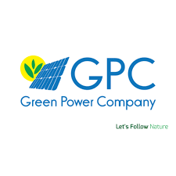
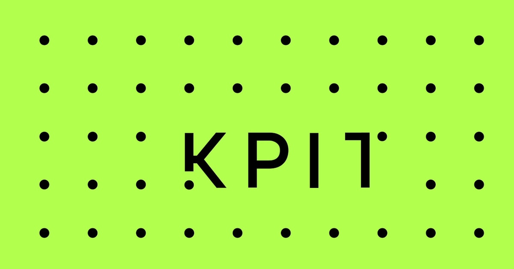
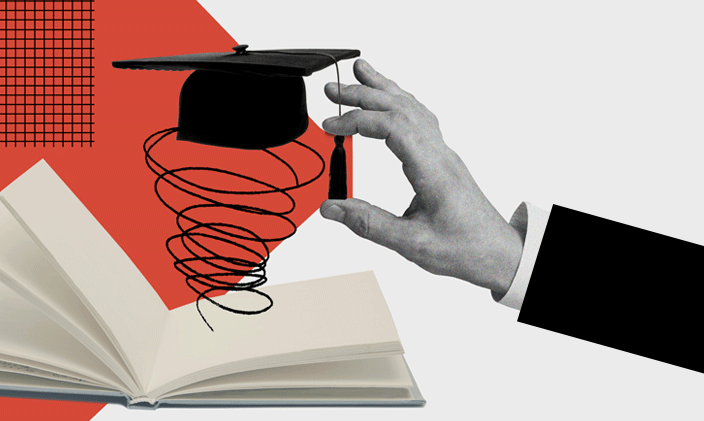

Explore my academic and professional timeline
Bachelor's Degree
Internship at GPC
Internship at ASM
Bachelor's Degree
Software Tester at KPIT
I started my studies at ISIMS after obtaining my scientific baccalaureate, marking the beginning of my academic journey in the field of computer science.
In early 2024, I developed a web application for managing the rental and maintenance of shopping centers using Angular and Laravel. This project enhanced my web development skills.
Between June and August 2023, I built a photovoltaic data simulator, helping users visualize the best solar panel installations using APIs.
Currently, I am working as a Software Tester at KPIT while pursuing further studies. I focus on quality assurance and software validation.
I graduated with a Bachelor's degree in Computer Science from the Higher Institute of Computer Science and Multimedia of Sfax (2021 - 2024). I specialized in data analysis and Big Data.
